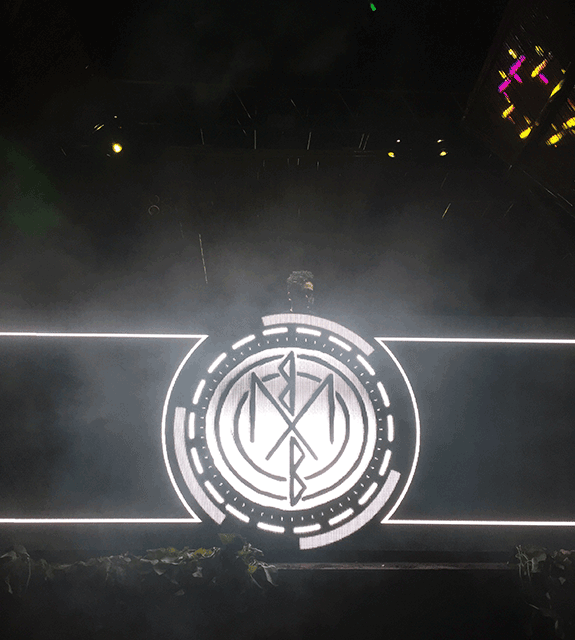
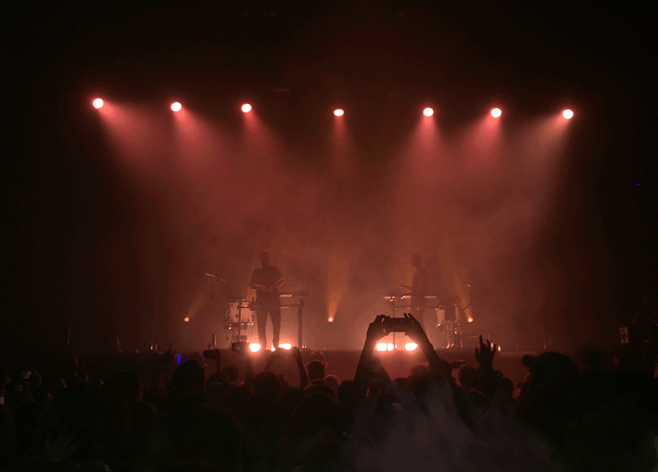
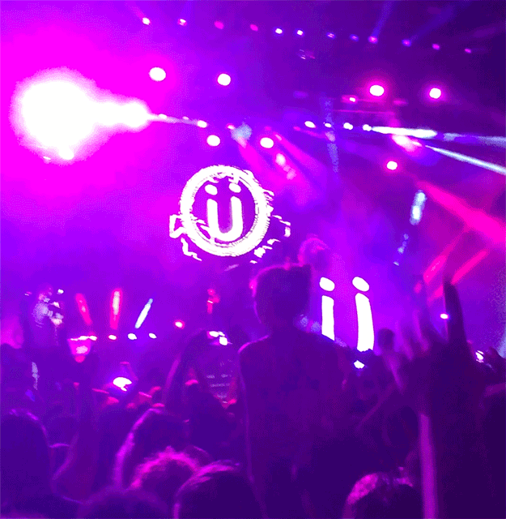

TOP CONCERTS
1. Ultra Music Festival

Location: Bayfront Park, Miami, FL
Date: March, 2017
Why it made my top three: Ultra is hands down my favorite experience of my young adult life. I am truly fortunate to go to a school like the University of Miami that allowed me to go to a festival like this with tons of my best friends. Each stage had a completely different atmosphere and it is honestly hard to pick a favorite, but the whole atmosphere is a unique, riveting experience that keeps me coming back each year.
2. Odesza

Location: The Electric Factory, Philadelphia, PA
Date: November, 2017
Why it made my top three: Odesza’s live performance was like none other that I have seen. The visuals of the lights, smoke machines, live odesza drum line, and intimate fans made the experience one of a kind. It was a culmination of hearing my favorite songs and seeing a visual representation live in a small welcoming environment that made the experience unforgettable.
3. Mad Decent Block Party

Location: Festival Pier, Philadelphia, PA
Date: August, 2015
Why it made my top three: Mad Decent was an amazing experience, because it was the first all EDM festival I have ever attended. It also featured acts such as Jack U, who do not perform together anymore, and Porter Robinson, who’s song “Sad Machine” is one of my all-time favorites. The festival was also the summer before coming to Miami in August, so it was kind of a last “hoorah” with a bunch of friends from high school before starting a new chapter at the U.